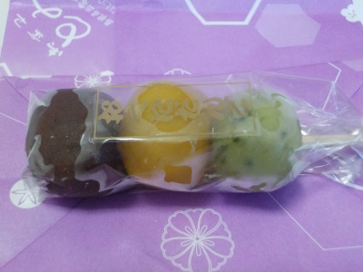

とみやの阿国団子。
2022/06/12

一個ずつ丁寧に包装されてる団子です。
黒いのがゴマ味、黄色が柚子味、緑がよもぎ味でした。
黒・黄色・緑は歌舞伎の幕の色で「阿国団子」らしいです。
小さい団子が1本150円は高い感じがしますが、餡子の和菓子だと思うと安いって思いました。
島根県出雲市大社町杵築東571
2022/06/12

一個ずつ丁寧に包装されてる団子です。
黒いのがゴマ味、黄色が柚子味、緑がよもぎ味でした。
黒・黄色・緑は歌舞伎の幕の色で「阿国団子」らしいです。
小さい団子が1本150円は高い感じがしますが、餡子の和菓子だと思うと安いって思いました。